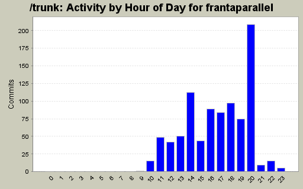
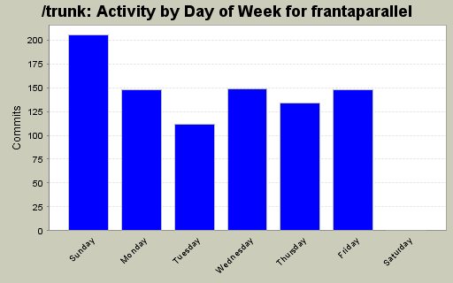
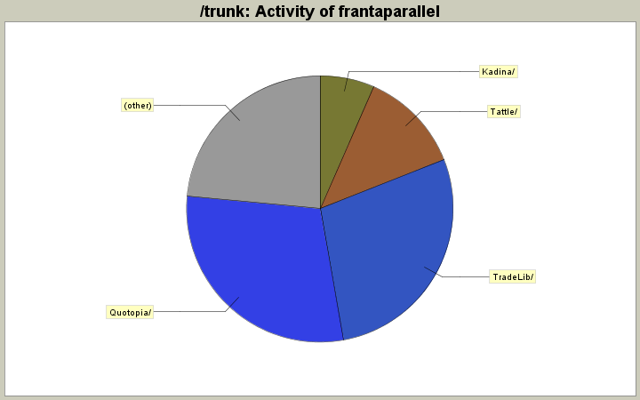

| Directory | Changes | Lines of Code | Lines per Change |
|---|---|---|---|
| Totals | 896 (100.0%) | 22162 (100.0%) | 24.7 |
| Quotopia/ | 60 (6.7%) | 6507 (29.4%) | 108.4 |
| TradeLib/ | 427 (47.7%) | 6242 (28.2%) | 14.6 |
| Tattle/ | 11 (1.2%) | 2744 (12.4%) | 249.4 |
| Kadina/ | 9 (1.0%) | 1460 (6.6%) | 162.2 |
| Tript/ | 22 (2.5%) | 852 (3.8%) | 38.7 |
| ASP/ | 6 (0.7%) | 737 (3.3%) | 122.8 |
| Replay/ | 41 (4.6%) | 502 (2.3%) | 12.2 |
| Gauntlet/ | 31 (3.5%) | 451 (2.0%) | 14.5 |
| InstallSuite/ | 39 (4.4%) | 405 (1.8%) | 10.3 |
| Kadina/Properties/ | 5 (0.6%) | 283 (1.3%) | 56.6 |
| Tattle/Properties/ | 5 (0.6%) | 258 (1.2%) | 51.6 |
| Replay/Properties/ | 12 (1.3%) | 255 (1.2%) | 21.2 |
| Tript/Properties/ | 5 (0.6%) | 246 (1.1%) | 49.2 |
| ASP/Properties/ | 5 (0.6%) | 246 (1.1%) | 49.2 |
| Box-Examples/ | 52 (5.8%) | 236 (1.1%) | 4.5 |
| TimeAndSales/ | 12 (1.3%) | 224 (1.0%) | 18.6 |
| Gauntlet/Properties/ | 11 (1.2%) | 151 (0.7%) | 13.7 |
| Chartographer/Properties/ | 5 (0.6%) | 124 (0.6%) | 24.8 |
| TimeAndSales/Properties/ | 5 (0.6%) | 117 (0.5%) | 23.4 |
| / | 13 (1.5%) | 82 (0.4%) | 6.3 |
| Tattle/obj/ | 2 (0.2%) | 18 (0.1%) | 9.0 |
| Quotopia/Properties/ | 9 (1.0%) | 9 (0.0%) | 1.0 |
| Replay/bin/Debug/ | 6 (0.7%) | 8 (0.0%) | 1.3 |
| EPF2IDX/ | 12 (1.3%) | 3 (0.0%) | 0.2 |
| Chartographer/ | 8 (0.9%) | 2 (0.0%) | 0.2 |
| Tript/bin/ | 2 (0.2%) | 0 (0.0%) | 0.0 |
| TradeLib/obj/ | 2 (0.2%) | 0 (0.0%) | 0.0 |
| TradeLib/bin/ | 2 (0.2%) | 0 (0.0%) | 0.0 |
| TradeLib/Properties/ | 1 (0.1%) | 0 (0.0%) | 0.0 |
| TimeAndSales/obj/Release/ | 2 (0.2%) | 0 (0.0%) | 0.0 |
| TimeAndSales/obj/Debug/ | 4 (0.4%) | 0 (0.0%) | 0.0 |
| TimeAndSales/bin/Release/ | 1 (0.1%) | 0 (0.0%) | 0.0 |
| TimeAndSales/bin/Debug/ | 1 (0.1%) | 0 (0.0%) | 0.0 |
| Tattle/obj/Release/ | 7 (0.8%) | 0 (0.0%) | 0.0 |
| Tattle/obj/Debug/ | 8 (0.9%) | 0 (0.0%) | 0.0 |
| Tattle/bin/ | 2 (0.2%) | 0 (0.0%) | 0.0 |
| SplitEPF/obj/Release/ | 1 (0.1%) | 0 (0.0%) | 0.0 |
| SplitEPF/obj/Debug/ | 2 (0.2%) | 0 (0.0%) | 0.0 |
| SplitEPF/bin/Release/ | 1 (0.1%) | 0 (0.0%) | 0.0 |
| SplitEPF/bin/Debug/ | 1 (0.1%) | 0 (0.0%) | 0.0 |
| SplitEPF/Properties/ | 1 (0.1%) | 0 (0.0%) | 0.0 |
| SplitEPF/ | 7 (0.8%) | 0 (0.0%) | 0.0 |
| Replay/obj/Release/ | 4 (0.4%) | 0 (0.0%) | 0.0 |
| Replay/obj/Debug/ | 2 (0.2%) | 0 (0.0%) | 0.0 |
| Replay/Resources/ | 6 (0.7%) | 0 (0.0%) | 0.0 |
| Quotopia/obj/Release/ | 2 (0.2%) | 0 (0.0%) | 0.0 |
| Quotopia/obj/Debug/ | 4 (0.4%) | 0 (0.0%) | 0.0 |
| Gauntlet/obj/ | 4 (0.4%) | 0 (0.0%) | 0.0 |
| EPF2IDX/obj/Release/ | 1 (0.1%) | 0 (0.0%) | 0.0 |
| EPF2IDX/obj/Debug/ | 1 (0.1%) | 0 (0.0%) | 0.0 |
| EPF2IDX/obj/ | 1 (0.1%) | 0 (0.0%) | 0.0 |
| EPF2IDX/bin/Release/ | 1 (0.1%) | 0 (0.0%) | 0.0 |
| EPF2IDX/bin/ | 1 (0.1%) | 0 (0.0%) | 0.0 |
| Chartographer/obj/Release/ | 4 (0.4%) | 0 (0.0%) | 0.0 |
| Chartographer/obj/Debug/ | 2 (0.2%) | 0 (0.0%) | 0.0 |
| Box-Examples/obj/ | 2 (0.2%) | 0 (0.0%) | 0.0 |
| Box-Examples/bin/ | 2 (0.2%) | 0 (0.0%) | 0.0 |
| Box-Examples/Properties/ | 1 (0.1%) | 0 (0.0%) | 0.0 |

made replay default behavior match other brokerservers, which is to notify all clients about orders and trades (unless requesting otherwise). default is still to only notify for subscribed stocks though.
12 lines of code changed in 2 files:
added new TL-BROKER type for api testing purposes
26 lines of code changed in 4 files:
added error-checking to brokerage information request methods.
9 lines of code changed in 1 file:
made default LocalSymbol be non-null so gethashcode should always function.
1 lines of code changed in 1 file:
added feature request support to client and server.
2 lines of code changed in 3 files:
added support for new brokerserver getOpen/ClosedPL on account, and get PosSize/AvgPrice for an account.
2 lines of code changed in 1 file:
added global version number to file in TLS install directory
3 lines of code changed in 2 files:
error checking of account arguments
0 lines of code changed in 1 file:
no longer used anywhere.
0 lines of code changed in 1 file:
no longer used anywhere.
0 lines of code changed in 1 file:
complete but untested implementation of overload for PosSize and AvgPrice client-side functions, where position information can optionally be provided for a specific account.
uncompleted (empty) implementation for open/closed pl for entire accounts.
2 lines of code changed in 1 file:
checked in changes to allow tradelink message support for AccountClosedPL, AccountOpenPL and PosSize for a non-default account. Changes include client and server side handlers for these messages.
4 lines of code changed in 3 files:
improved diagnostics on installer, removed pause at start
0 lines of code changed in 1 file:
added revision to tradelink client
0 lines of code changed in 1 file:
appended version number automatically to installer file
13 lines of code changed in 1 file:
added book update capability to replay when orders are canceled.
4 lines of code changed in 2 files:
fixed a bug where broker's BBO was calculated improperly. added exchange information to reflected book.
6 lines of code changed in 2 files:
changed ordercancel delegates from long to uint32 (since they're being sent as strings it shouldn't matter). added gotAccounts to broker/replay, made broker CancelOrders send notifications. improved ui of replay.
71 lines of code changed in 7 files:
added ASP project to address issue #16
995 lines of code changed in 14 files:
fixed namespace mismatch from import
1 lines of code changed in 1 file:
(227 more)